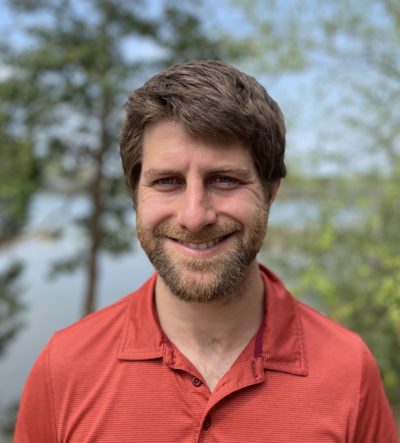

|
 |
Mark Moellermoeller@cs.cornell.edu Since 2020, I am a PhD student in Computer Science at Cornell, where I am co-advised by Nate Foster and Alexandra Silva. I anticipate finishing my PhD in May of 2026. I enjoyed being an organizer of the Programming Languages Discussion Group (PLDG/CS7190) for several years. In August 2025, I organized the Upstate PL Seminar at Cornell. |
|
ResearchI'm interested broadly in formal methods and programming language design. My current projects involve automata learning and formal verification of network forwarding planes.PublicationsActive Learning of Symbolic NetKAT AutomataMark Moeller, Tiago Ferreira, Thomas Lu, Nate Foster, Alexandra Silva PLDI 2025 [pdf] [artifact] KATch: A Fast Symbolic Verifier for NetKAT Mark Moeller + Jules Jacobs, Olivier Savary Belanger, David Darais, Cole Schlesinger, Steffen Smolka, Nate Foster, Alexandra Silva PLDI 2024 [pdf] [code] Automata Learning with an Incomplete Teacher Mark Moeller, Thomas Wiener, Alaia Solko-Breslin, Caleb Koch, Nate Foster, Alexandra Silva ECOOP 2023 [pdf] [code] [artifact] Teaching
|
||